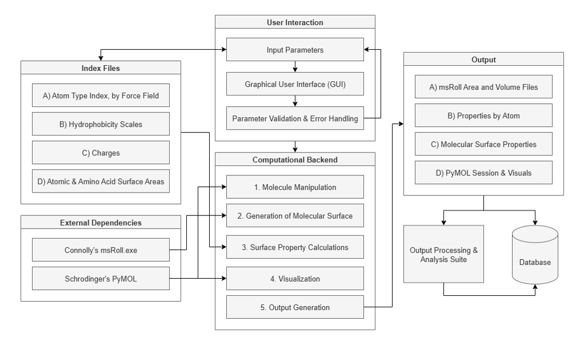
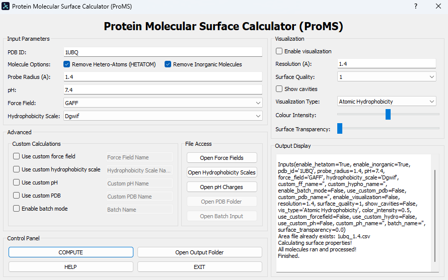
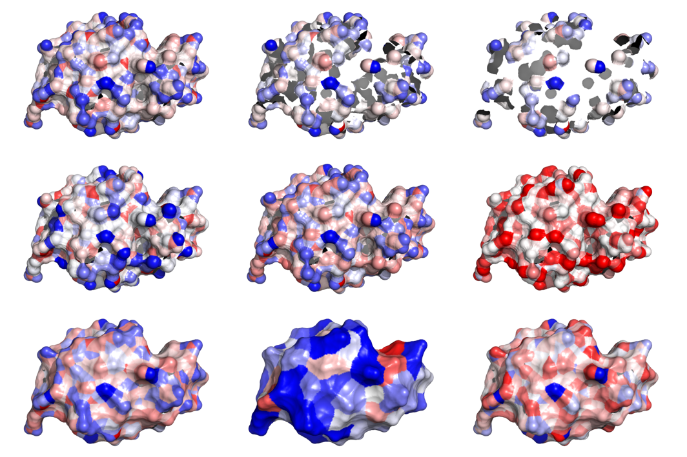
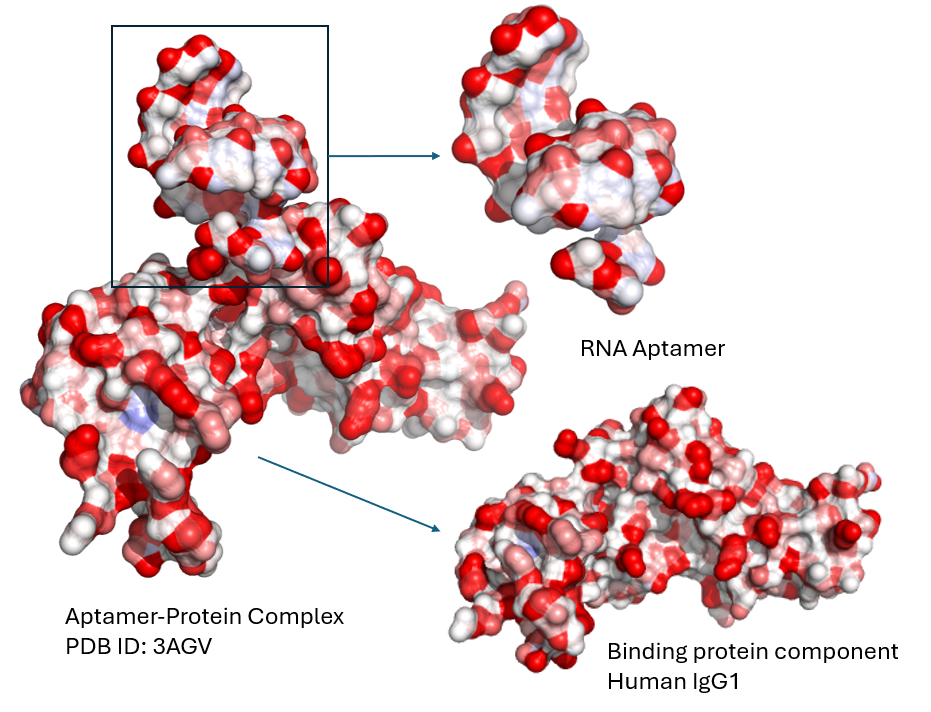

Researcher control
Choose probe radius, pH, force field, hydrophobicity scale, structure cleaning, and visualization quality.
An integrated PyMOL plugin for quantifying and visualizing molecular surface properties. Please contact me for access.
Download thesisProMS, the “Protein Molecular Surface Calculator,” turns a structure from the Protein Data Bank or a custom PDB file into a reproducible surface analysis. Researchers can tune physical parameters, compare property definitions, export quantitative summaries, and inspect the result directly in PyMOL. Originally designed primarily for protein analysis, ProMS has been expanded to small molecules, such as drugs and steroids, and nucleic acids.
Molecular interactions depend on the chemical character exposed at a surface. Global residue values can obscure the uneven contribution of individual atoms and the amount of each atom that is actually solvent-accessible.
ProMS combines geometric surface calculations with force-field, hydrophobicity, and pH-dependent charge data to map those properties at atomic resolution and summarize them at molecular scale.

The pipeline cleans the structure, computes per-atom solvent-accessible areas for a chosen probe radius, and combines exposed area with hydrophobicity and charge reference data. It generates atomic results, molecular summaries, volume files, and a saved PyMOL session.
Choose probe radius, pH, force field, hydrophobicity scale, structure cleaning, and visualization quality.
Bring custom PDB files, force fields, hydrophobicity scales, and charge settings into the same workflow.
Run one interactive analysis through the Qt interface or process a prepared set of structures in batch mode.

ProMS writes computed properties back into PyMOL, turning numerical surface values into spatial maps that can be inspected and compared.


ProMS formed the basis of my 2026 master’s thesis: ProMS: An Integrated Computational Framework for Molecular Surface Analysis and Atomic-Level Hydrophobicity Mapping.
The tool was distributed to researchers and collaborators across multiple universities and biotechnology organizations.
01Reproducibility starts with making every physical assumption and input parameter explicit.
02Visual outputs help researchers interrogate patterns that summary values alone can hide.
03Flexible tools must still guide users toward consistent, interpretable analysis.